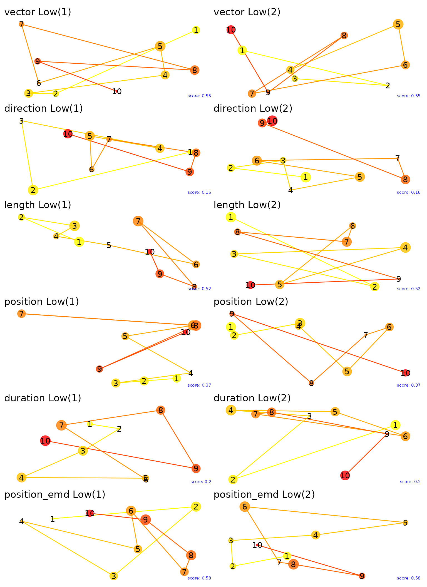
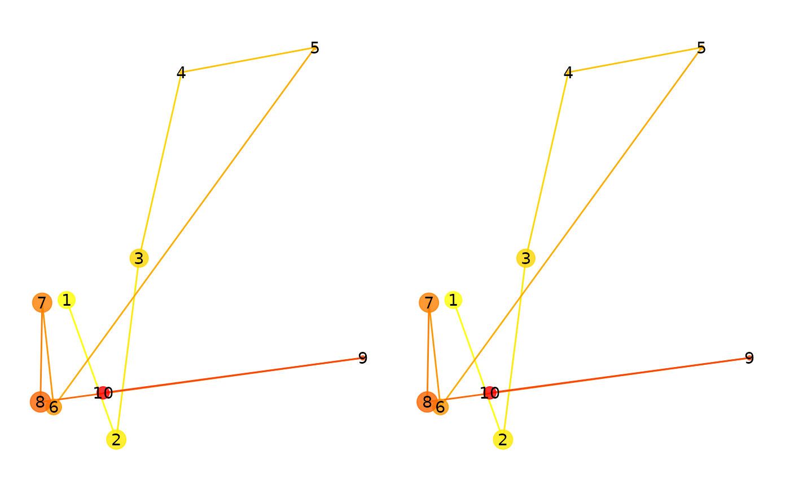

Multimatch
Multimatch.RmdMultimatch
MultiMatch (Dewhurst et al. 2012) is a comprehensive method for analyzing and comparing eye movement scanpaths. It evaluates scanpath similarity across five dimensions: “vector”, “direction”, “length”, “position”, and “duration”. By breaking down eye movements into these distinct components, MultiMatch provides a detailed and nuanced comparison of visual behavior. This method is particularly useful for studies in psychology, cognitive science, and human-computer interaction where understanding visual attention and patterns is crucial. In our implementation, we add another metric based on the earth mover’s distance (EMD; ‘position_emd’) between the positions of the fixations. This should capture similarities in the distributions of the fixations that are not order-specific.
Let’s simulate a simple eye-movement pattern and compare them with one another.
# Simulate fixation data
simulate_fixations_linear <- function(n) {
out <- data.frame(
fixation = 1:n,
x = cumsum(rnorm(n, mean = 50, sd = 10)),
y = cumsum(rnorm(n, mean = 50, sd = 10)),
duration = rpois(n, lambda = 200)
)
fixation_group(out$x, out$y, out$duration, out$fixation)
}
fixations1 <- simulate_fixations_linear(10)
fixations2 <- simulate_fixations_linear(12)
p1 <- plot(fixations1)
p2 <- plot(fixations2)
p1 + p2
Now, we will compare the two fixation groups using the
multimatch function.
sp1 <- scanpath(fixations1)
sp2 <- scanpath(fixations2)
eyesim:::multi_match(sp1, sp2, c(500,500))## mm_vector mm_direction mm_length mm_position mm_duration
## 0.9930345 0.9755456 0.9916165 0.7145947 0.9462729
## mm_position_emd
## 0.9167082All of the metrics give pretty high values, consistent with the known similarity of the scanpaths.
# Simulate fixation data for each scenario
simulate_fixations_zigzag <- function() {
out <- data.frame(
fixation = 1:10,
x = cumsum(c(50, 50, 50, 50, 50, 50, 50, 50, 50, 50)),
y = cumsum(c(50, -50, 50, -50, 50, -50, 50, -50, 50, -50)),
duration = rpois(10, lambda = 200)
)
fixation_group(out$x, out$y, out$duration, out$fixation)
}
fixations1_linear <- simulate_fixations_linear(10)
fixations2_zigzag <- simulate_fixations_zigzag()
sp1 <- scanpath(fixations1_linear)
sp2 <- scanpath(fixations2_zigzag)
eyesim:::multi_match(sp1, sp2, c(500,500))## mm_vector mm_direction mm_length mm_position mm_duration
## 0.9400523 0.5882368 0.9884380 0.6518825 0.9247630
## mm_position_emd
## 0.6397256We will simulate 8000 pairs of randomly generated scanpaths and show the distribution of the similarity scores for each metric.
fgs <- replicate(8000, {
fixations1 <- fixation_group(runif(10)*500, runif(10)*500, round(runif(10)*10)+1, 1:10)
fixations2 <- fixation_group(runif(10)*500, runif(10)*500, round(runif(10)*10)+1, 1:10)
list(fg1=fixations1, fg2=fixations2)
#sp1 <- scanpath(fixations1)
#sp2 <- scanpath(fixations2)
#eyesim:::multi_match(sp1, sp2, c(500,500))
}, simplify=FALSE)
ssdf <- lapply(fgs, function(x) eyesim:::multi_match(scanpath(x$fg1), scanpath(x$fg2), c(500,500))) %>% bind_rows()
# Create ridgeline plots for each MultiMatch metric
ridgeline_vector <- ggplot(ssdf, aes(x = mm_vector, y = factor(1, labels = "Vector Similarity"))) +
geom_density_ridges(scale = 3, rel_min_height = 0.01, bandwidth = 0.05, fill = 'blue', color = 'black', alpha = 0.7) +
labs(x = 'Similarity', y = '') + theme_ridges() + theme(axis.title.y = element_blank())
ridgeline_direction <- ggplot(ssdf, aes(x = mm_direction, y = factor(1, labels = "Direction Similarity"))) +
geom_density_ridges(scale = 3, rel_min_height = 0.01, bandwidth = 0.05, fill = 'green', color = 'black', alpha = 0.7) +
labs(x = 'Similarity', y = '') + theme_ridges() + theme(axis.title.y = element_blank())
ridgeline_length <- ggplot(ssdf, aes(x = mm_length, y = factor(1, labels = "Length Similarity"))) +
geom_density_ridges(scale = 3, rel_min_height = 0.01, bandwidth = 0.05, fill = 'red', color = 'black', alpha = 0.7) +
labs(x = 'Similarity', y = '') + theme_ridges() + theme(axis.title.y = element_blank())
ridgeline_position <- ggplot(ssdf, aes(x = mm_position, y = factor(1, labels = "Position Similarity"))) +
geom_density_ridges(scale = 3, rel_min_height = 0.01, bandwidth = 0.05, fill = 'purple', color = 'black', alpha = 0.7) +
labs(x = 'Similarity', y = '') + theme_ridges() + theme(axis.title.y = element_blank())
ridgeline_duration <- ggplot(ssdf, aes(x = mm_duration, y = factor(1, labels = "Duration Similarity"))) +
geom_density_ridges(scale = 3, rel_min_height = 0.01, bandwidth = 0.05, fill = 'orange', color = 'black', alpha = 0.7) +
labs(x = 'Similarity', y = '') + theme_ridges() + theme(axis.title.y = element_blank())
ridgeline_emd <- ggplot(ssdf, aes(x = mm_position_emd, y = factor(1, labels = "EMD Similarity"))) +
geom_density_ridges(scale = 3, rel_min_height = 0.01, bandwidth = 0.05, fill = 'cyan', color = 'black', alpha = 0.7) +
labs(x = 'Similarity', y = '') + theme_ridges() + theme(axis.title.y = element_blank())
# Combine the ridgeline plots using patchwork
combined_plot <- ridgeline_vector / ridgeline_direction / ridgeline_length / ridgeline_position / ridgeline_duration / ridgeline_emd +
plot_layout(ncol = 1)
# Display the combined plot
print(combined_plot)
Let’s plot the fixations for the extreme values of the multimatch metrics. By examining the highest and lowest pairs we can gain insight into what each metric is capturing. Note that the size of points captures duration of each fixation.
metrics <- c("vector", "direction", "length", "position", "duration", "position_emd")
extremes <- lapply(metrics, function(metric) {
m <- paste0("mm_", metric)
list(
high = which.max(ssdf[[m]]),
low = which.min(ssdf[[m]])
)
})
names(extremes) <- metrics
# Function to create a plot for a fixation group with a title and annotation
plot_fixation_group <- function(fg, title, metric_value) {
plot(fg) +
ggtitle(title) +
annotate("text", x = Inf, y = -Inf, label = paste("score:", round(metric_value, 2)),
hjust = 1.1, vjust = -1.1, size = 2, color = "blue")
}
# Create plots for each metric
plots <- lapply(names(extremes), function(metric) {
high_index <- extremes[[metric]]$high
low_index <- extremes[[metric]]$low
metric_high_value <- ssdf[high_index, paste0("mm_", metric)]
metric_low_value <- ssdf[low_index, paste0("mm_", metric)]
high_fg1 <- fgs[[high_index]]$fg1
high_fg2 <- fgs[[high_index]]$fg2
low_fg1 <- fgs[[low_index]]$fg1
low_fg2 <- fgs[[low_index]]$fg2
high_plot1 <- plot_fixation_group(high_fg1, paste(metric, "High(1)"), metric_high_value)
high_plot2 <- plot_fixation_group(high_fg2, paste(metric, "High(2)"), metric_high_value)
low_plot1 <- plot_fixation_group(low_fg1, paste(metric, "Low(1)"), metric_low_value)
low_plot2 <- plot_fixation_group(low_fg2, paste(metric, "Low(2)"), metric_low_value)
list(high_plot = high_plot1 + high_plot2, low_plot = low_plot1 + low_plot2)
})
# Set the size of each plot
plot_height <- 12 # Adjust height as needed
plot_width <- 12 # Adjust width as needed
# Combine and arrange plots using patchwork
high_plots <- wrap_plots(
plots[[1]]$high_plot,
plots[[2]]$high_plot,
plots[[3]]$high_plot,
plots[[4]]$high_plot,
plots[[5]]$high_plot,
plots[[6]]$high_plot,
nrow = 6
) + plot_layout(guides = 'collect', heights = rep(plot_height, 6)) + ggtitle("High MultiMatch Scores")
low_plots <- wrap_plots(
plots[[1]]$low_plot,
plots[[2]]$low_plot,
plots[[3]]$low_plot,
plots[[4]]$low_plot,
plots[[5]]$low_plot,
plots[[6]]$low_plot,
nrow = 6
) + plot_layout(guides = 'collect', heights = rep(plot_height, 6)) + ggtitle("Low MultiMatch Scores")
# Save the plots to file
#ggsave("high_plots.png", plot = high_plots, height = plot_height * 5, width = plot_width, units = "in")
#ggsave("low_plots.png", plot = low_plots, height = plot_height * 5, width = plot_width, units = "in")These are the highest pairs of scanpaths for each metric.
high_plots
And the lowest.
low_plots
How transofrmations impact Multimatch metrics
Let’s generate a random scanpath and apply some transformations to it to see how the multimatch metrics change.

eyesim:::multi_match(scanpath(fg), scanpath(fg), c(500,500))## mm_vector mm_direction mm_length mm_position mm_duration
## 1 1 1 1 1
## mm_position_emd
## 1Now, we will scale the second scanpath by .5 and recompute the multimatch metrics. You will notice that the “direction” metric remains 1, while position (especially) decreases dramatically. This is because the absolute positions of the fixations are not preserved under scaling.
fg2 <- fg
fg2$y <- fg2$y * .5
fg2$x <- fg2$x * .5
p1 <- plot(fg) + ylim(0,500)## Scale for y is already present.
## Adding another scale for y, which will replace the existing scale.
p2 <- plot(fg2) + ylim(0,500)## Scale for y is already present.
## Adding another scale for y, which will replace the existing scale.
p1+p2
eyesim:::multi_match(scanpath(fg), scanpath(fg2), c(500,500))## mm_vector mm_direction mm_length mm_position mm_duration
## 0.9300530 1.0000000 0.8601060 0.8158216 1.0000000
## mm_position_emd
## 0.8000760Next we will preserve the positions of the fixations but scramble their order. This will have a large impact on the “direction” metric, but not on the other metrics. Note also the earth mover’s distance should remain high.
fg2 <- fg
ord <- sample(1:nrow(fg2))
fg2$x <- fg2$x[ord]
fg2$y <- fg2$y[ord]
fg2$duration <- fg2$duration[ord]
p1 <- plot(fg) + ylim(0,500)## Scale for y is already present.
## Adding another scale for y, which will replace the existing scale.
p2 <- plot(fg2) + ylim(0,500)## Scale for y is already present.
## Adding another scale for y, which will replace the existing scale.
p1+p2
eyesim:::multi_match(scanpath(fg), scanpath(fg2), c(500,500))## mm_vector mm_direction mm_length mm_position mm_duration
## 0.8242253 0.5280783 0.9153703 0.6467169 0.3750000
## mm_position_emd
## 0.9945680